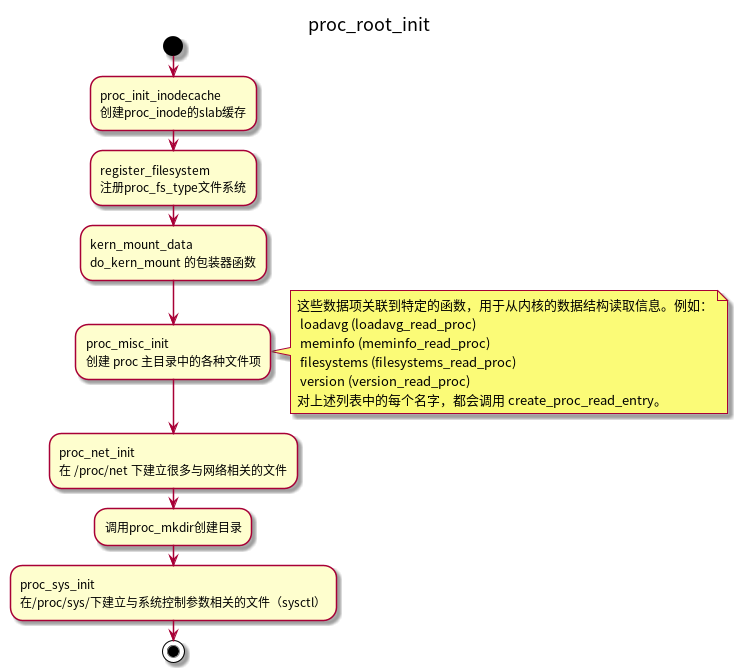

PROC文件系统
Table of Contents
简介： 内核可以通过 proc文件系统 生成与系统的状态和配置有关的信息，用户和系统程序可以从普通文件读取这些信息，而无需专门的工具与内核通信。此外还可以通过向 proc 文件系统的文件写入字符串，来向内核发送数据。
1 /proc的内容
目录的内容可以分为以下几类：
- 内存管理；
- 系统进程的特征数据；
- 文件系统；
- 设备驱动程序；
- 系统总线；
- 电源管理；
- 终端；
- 系统控制参数。
1.1 特定于进程的数据
/proc目录中有很多用进程PID命名的文件夹，文件夹中的文件包含了相应进程的数据。
- environ
- 进程的环境变量
- maps
- 以文本形式列出了进程本身和进程使用库的内存映射。
- status
- 包含了有关进程状态的一般信息。UID/GID、内存分配、进程能力、各个信号掩码的状态等等。
- stat和statm
- 以一连串数字的形式提供了进程及其内存消耗的更多状态信息。
- fd子目录
- 包含文件打开的文件描述符，目录中的文件都是符号链接，指向文件描述符对应的文件位置。
- cwd
- 进程的当前工作目录。
- exe
- 进程的二进制代码文件路径。
- root
- 进程的根目录。
1.2 一般性的系统信息
/proc目录中还有一些文件，包含了一般性的系统信息。
- iomem
提供了用来和设备通信的内存地址的有关信息。
sudo cat /proc/iomem 00000000-00000fff : Reserved 00001000-0009ffff : System RAM 000a0000-000fffff : Reserved 000a0000-000bffff : PCI Bus 0000:00 000c0000-000dffff : PCI Bus 0000:00 000c0000-000cffff : Video ROM 000f0000-000fffff : System ROM 00100000-09e01fff : System RAM 09e02000-09ffffff : Reserved 0a000000-0a1fffff : System RAM 0a200000-0a20bfff : ACPI Non-volatile Storage 0a20c000-0affffff : System RAM 0b000000-0b01ffff : Reserved 0b020000-d76aafff : System RAM d76ab000-d76effff : Reserved d76f0000-d9e86fff : System RAM d9e87000-d9e87fff : Reserved d9e88000-db53ffff : System RAM ......- ioports
提供了用来和设备通信端口的有关信息。
$ sudo cat /proc/ioports 0000-03af : PCI Bus 0000:00 0000-001f : dma1 0020-0021 : pic1 0040-0043 : timer0 0050-0053 : timer1 0060-0060 : keyboard 0061-0061 : PNP0800:00 0064-0064 : keyboard 0070-0071 : rtc0 0080-008f : dma page reg 00a0-00a1 : pic2 00c0-00df : dma2 00f0-00ff : fpu 03b0-03df : PCI Bus 0000:00 03e0-0cf7 : PCI Bus 0000:00 03f8-03ff : serial 040b-040b : pnp 00:07 04d0-04d1 : pnp 00:07 04d6-04d6 : pnp 00:07 0800-089f : pnp 00:07 0800-0803 : ACPI PM1a_EVT_BLK 0804-0805 : ACPI PM1a_CNT_BLK 0808-080b : ACPI PM_TMR 0810-0815 : ACPI CPU throttle 0820-0827 : ACPI GPE0_BLK ......- buddyinfo
- 伙伴系统的分配情况。
- slabinfo
- slab分配器的使用情况。
- meminfo
- 给出了一般性的内存使用情况，分为高端内存、低端内存、空闲内存、已分配区域、共享区域、交换和回写内存，等等。
- vmstat
- 内存管理的其他特征信息，包括在内存管理的各个子系统中的内存页的数目。
- kallsyms
- 用于支持内核代码调试，给出了内核全局变量和函数在内存中的地址。
- kcore
- 是一个动态的内核文件，也用于支持内核代码调试。给出了运行中内核的的所有数据，即主内存中的全部内容。该文件类似用户进程的coredump文件，可以用调试器调试该文件，来查看系统的当前状态信息。
- interrupts
- 保存了系统操作期间引发中断的信息。包括中断数目、中断号、相关的设备名称和驱动程序等。
- loadavg
- 给出了系统过去60秒、5分钟、15分钟的平均系统负荷。
- uptime
- 给出了系统运行时间。
1.3 网络信息
/proc/net子目录提供了内核的各种网络选项有关的数据。其中保存了各种协议和设备数据。
- tcp和udp
- ipv4的tcp和udp的各种统计数据。
- tcp6和udp6
- ipv6的tcp和udp的各种统计数据。
- unix
- UNIX套接子统计数据。
- arp
- 用于反向arp解析的arp表。
- dev
- 保存了通过系统网络接口传输的数据量的统计数据（包括环回）。可以用此来检查网络传输的质量，因为其中包含了传输失败和丢弃的数据包，以及冲突的数据。
某些网络驱动程序在/proc/net下提供了额外的子目录，提供了关于硬件的详细信息。
1.4 系统控制参数
用于动态地检查和修改内核行为的系统控制参数。通过sysctl系统调用也能修改这些参数，但是需要的工作量更多，因 为首先必须写一个程序，来支持通过系统调用接口与内核通信。sysctl机制已经标记为废弃（每次调用sysctl时，内核将输出一个警告信息），计划在未来的某个时候去掉。
sysctl系统调用实际上是不必要的，因为通过/proc接口对内核数据的操作已经简单到了极点。
sysctl参数由一个独立的子目录/proc/sys管理，它进一步划分为各种子目录，对应于内核的各个子系统。目录中的文件提供了对应内核子系统的特征数据，这些文件不仅可以读，还可以通过普通文件的操作写入新值，
proc文件系统是一个虚拟文件系统，通过proc文件系统，可以获取有关内核子系统的信息。sysctl机制与此文件系统密切相关。proc文件系统提供了一种接口，使得可以简cat或者echo等程序来修改内核参数。通常proc文件系统装载在/proc路径（当然也可以装载到其他位置）。
2 数据结构
2.1 proc数据项的表示
proc中的每个数据项都由proc_dir_entry的一个实例描述，其定义如下：
struct proc_dir_entry { unsigned int low_ino; unsigned short namelen; //文件名长度 const char *name; //存储文件名 mode_t mode; //访问权相 nlink_t nlink; //目录中子目录和符号链接的数目 uid_t uid; gid_t gid; /*文件长度（字节），由于 proc 数据项是动态生成的，所以文件的长度通常无法预先知道。 在这种情况下，该值为0。*/ loff_t size; const struct inode_operations *proc_iops;//inode操作函数 const struct file_operations *proc_fops; //文件操作函数 get_info_t *get_info; //函数指针，指向相关子系统中返回所需数据的函数 struct module *owner; //next用于连接目录下的数据项 //parent指向父目录 //subdir指向目录中的第一个子数据项 struct proc_dir_entry *next, *parent, *subdir; void *data; read_proc_t *read_proc; //从内核读取数据的函数 write_proc_t *write_proc; //向内核写入数据的函数 atomic_t count; /* 实用计数 */ int pde_users; /* number of callers into module in progress */ spinlock_t pde_unload_lock; /* proc_fops checks and pde_users bumps */ struct completion *pde_unload_completion; shadow_proc_t *shadow_proc; };
2.2 proc inode
proc_inode结构用来支持以面向inode的方式来查看proc文件系统的数据项。
union proc_op { /* 用于获得特定于进程的信息 */ int (*proc_get_link)(struct dentry *, struct path *); //用于在虚拟文件系统中建立链接，指向特定于进程的数据 int (*proc_show)(struct seq_file *m, struct pid_namespace *ns, struct pid *pid, struct task_struct *task); }; struct proc_inode { struct pid *pid; //进程的pid实例 int fd; //对应于/proc/<pic>/fd/中的某个文件描述符 union proc_op op; //指向关联到proc数据项的proc_dir_entry实例 struct proc_dir_entry *pde; struct inode vfs_inode; //inode实例 };
proc_inode结构用于将特定于proc的数据与VFS层的inode数据进行关联。
如果inode（vfs_inode）结构实例关联到了proc文件系统，则可以通过container_of机制来获得proc_inode。定义如下：
static inline struct proc_inode *PROC_I(const struct inode *inode) { return container_of(inode, struct proc_inode, vfs_inode); }
3 初始化

proc_mkdir函数会注册一个新的子目录，并返回对应的proc_dir_entry实例。
4 proc文件系统的装载
从用户空间的角度来看，/proc的装载几乎与非虚拟文件系统类似。唯一的区别是，将一个适宜的关键字（通常是proc或none）指定为数据源，而不使用设备文件：
# mount -t proc proc /proc
内核添加文件系统时，会扫描一个链表(file_system)，以查找和该文件系统相关联的file_system_type实例。proc文件系统的结构如下：
static struct file_system_type proc_fs_type = { .name = "proc", //proc文件系统的超级块的填充函数 .get_sb = proc_get_sb, .kill_sb = proc_kill_sb, };
proc_get_sb 借助 proc_fill_super 来填充一个 super_block 的新实例。
int proc_fill_super(struct super_block *s) { struct inode * root_inode; s->s_flags |= MS_NODIRATIME | MS_NOSUID | MS_NOEXEC; s->s_blocksize = 1024; //块长度总为1024 s->s_blocksize_bits = 10; //2^10 = 1024 s->s_magic = PROC_SUPER_MAGIC; //proc文件系统魔数 s->s_op = &proc_sops; s->s_time_gran = 1; de_get(&proc_root); //为根目录创建inode root_inode = proc_get_inode(s, PROC_ROOT_INO, &proc_root); if (!root_inode) goto out_no_root; root_inode->i_uid = 0; root_inode->i_gid = 0; //转换为dentry，并加入到超级块 s->s_root = d_alloc_root(root_inode); if (!s->s_root) goto out_no_root; return 0; } struct proc_dir_entry proc_root = { .low_ino = PROC_ROOT_INO, .namelen = 5, .name = "/proc", .mode = S_IFDIR | S_IRUGO | S_IXUGO, .nlink = 2, .count = ATOMIC_INIT(1), .proc_iops = &proc_root_inode_operations, .proc_fops = &proc_root_operations, .parent = &proc_root, };
proc_sops定义了超级块的各个操作函数：
static const struct super_operations proc_sops = { .alloc_inode = proc_alloc_inode, .destroy_inode = proc_destroy_inode, .read_inode = proc_read_inode, .drop_inode = generic_delete_inode, .delete_inode = proc_delete_inode, .statfs = simple_statfs, .remount_fs = proc_remount, };
proc 文件系统中，根inode不同于与其他inode的，它不仅包含“普通”的文件和目录，还管理着特定于进程的PID目录，其中包含了各个系统进程的详细信息。因此，根inode有自身的inode操作和文件操作，定义如下：
static const struct file_operations proc_root_operations = { .read = generic_read_dir, .readdir = proc_root_readdir, }; static const struct inode_operations proc_root_inode_operations = { .lookup = proc_root_lookup, .getattr = proc_root_getattr, };
5 管理/proc数据项
5.1 数据项的创建和注册
数据项分两个步骤添加到proc文件系统，首先创建一个proc_dir_entry的一个实例，并填充所有需要的信息。然后调用proc_register将其注册到proc的数据结构，使得能够在文件系统中看到该数据项。
内核为此提供了辅助函数，最常用的是create_proc_entry：
struct proc_dir_entry *create_proc_entry(const char *name, mode_t mode, struct proc_dir_entry *parent);
create_proc_entry函数只填充了 proc_dir_entry 结构的一些必要的成员。因此必须对产生的结构作一些手工校正。
proc_register 用于将数据项注册到 proc 文件系统：
static int proc_register(struct proc_dir_entry * dir, struct proc_dir_entry * dp) { unsigned int i; //生成一个唯一的 proc 内部编号 i = get_inode_number(); dp->low_ino = i; /*（为空时） 根据文件类型，初始化file_operations 和 inode_operations 结构实例的指针*/ if (S_ISDIR(dp->mode)) { if (dp->proc_iops == NULL) { dp->proc_fops = &proc_dir_operations; dp->proc_iops = &proc_dir_inode_operations; } dir->nlink++; } else if (S_ISLNK(dp->mode)) { if (dp->proc_iops == NULL) dp->proc_iops = &proc_link_inode_operations; } else if (S_ISREG(dp->mode)) { if (dp->proc_fops == NULL) dp->proc_fops = &proc_file_operations; if (dp->proc_iops == NULL) dp->proc_iops = &proc_file_inode_operations; } //建立层次结构关系 dp->next = dir->subdir; dp->parent = dir; dir->subdir = dp; }
5.2 查找proc数据项
用户空间应用程序访问proc文件时，就像是访问常规文件系统中的普通文件一样。搜索proc数据项时所经由的代码路径，与VFS例程是相同。VFS查找过程最终调用inode_operations的lookup函数指针，根据文件名的各个路径分量，来确定文件名所对应的inode。
对proc数据项的搜索从proc文件系统的装载点开始，通常是/proc。在proc文件系统根目录的file_operations（proc_dir_ops字段）实例中，其lookup指针指向了proc_root_lookup函数。
proc_root_lookup proc_lookup proc_pid_lookup
此例程会区分两部分不同类型的proc数据项。数据项有可能是特定于进程的目录中的文件（/proc/<pid>/），也有可能是驱动或者子系统动态注册的文件。内核首先调用proc_lookup查找常规数据项，如果没找到，调用proc_pid_lookup查找特定与进程的文件。
6 读取和写入信息
内核使用保存在proc_file_operations中的操作来读写常规proc数据项的内容。该结构中的函数指针，所指向的目标函数如下：
static const struct file_operations proc_file_operations = { .llseek = proc_file_lseek, .read = proc_file_read, .write = proc_file_write, };
- proc_file_read 的实现
- 分配一个内核内存页面，产生的数据将填充到页面中；
- 调用一个特定于文件的函数，向内核内存页面填充数据；
- 数据从内核空间复制到用户空间。
- proc_file_write 的实现
static ssize_t proc_file_write(struct file *file, const char __user *buffer, size_t count, loff_t *ppos) { struct inode *inode = file->f_path.dentry->d_inode; struct proc_dir_entry * dp; dp = PDE(inode); if (!dp->write_proc) return -EIO; /* FIXME: does this routine need ppos? probably... */ return dp->write_proc(file, buffer, count, dp->data); }
7 进程相关信息
proc文件系统最初目的是输出系统进程相关的详细信息。
proc_pid_lookup 负责打开 /proc/<pid> 中特定于PID的文件，此函数会创建一个inode作为第一个对象，用于后续特定于PID的操作。
在特定于PID的目录 /proc/pid 中处理一个文件（或目录）时，使用该目录的inode操作来完成。内核使用静态定义的 proc_tgid_base_inode_operations 结构作为PID inode的 inode_operations 实例，结构定义如下：
static const struct inode_operations proc_tgid_base_inode_operations = { .lookup = proc_tgid_base_lookup, .getattr = pid_getattr, .setattr = proc_setattr, };
8 系统控制机制
8.1 sysctl
sysctl使用打包为符号常数的整数来表示路径分量。
内核提供的基本类别：
enum { CTL_KERN=1, /* 内核自身相关信息*/ CTL_VM=2, /* 内存管理信息和参数 */ CTL_NET=3, /* 网络 */ CTL_PROC=4, /* 进程信息 */ CTL_FS=5, /* 文件系统 */ CTL_DEBUG=6, /* 调试 */ CTL_DEV=7, /* 设备 */ CTL_BUS=8, /* 总线 */ CTL_ABI=9, /* 二进制仿真 */ CTL_CPU=10, /* CPU相关信息 */ //...... CTL_DEV=7, /* 外设相关信息 */ //...... };
8.2 数据结构
struct ctl_table { int ctl_name; //二进制ID，该层次上唯一 const char *procname; void *data; int maxlen; //指定sysctl能够接收或输出的数据的最大长度（按字节计算） mode_t mode; //访问权限 struct ctl_table *child; //指向一个数组，代表当前数据项的子节点 struct ctl_table *parent; proc_handler *proc_handler; /* Callback for text formatting */ ctl_handler *strategy; //内核用来读写sysctl的值 void *extra1; void *extra2; };
内核提供了 ctl_table_header 数据结构，使得能够将几个sysctl表维护在一个链表中。该结构的第一个成员是一个sysctl表，接下来是一个链表元素，用于链表的管理：
struct ctl_table_header { struct ctl_table *ctl_table; //指向sysctl项的数组 struct list_head ctl_entry; //用于管理链表 int used; struct completion *unregistering; };
8.3 静态sysctl表
static struct ctl_table root_table[] = { { .ctl_name = CTL_KERN, .procname = "kernel", .mode = 0555, .child = kern_table, }, { .ctl_name = CTL_VM, .procname = "vm", .mode = 0555, .child = vm_table, }, #ifdef CONFIG_NET { .ctl_name = CTL_NET, .procname = "net", .mode = 0555, .child = net_table, }, #endif //... { .ctl_name = CTL_DEV, .procname = "dev", .mode = 0555, .child = dev_table, }, { .ctl_name = 0 } }
8.4 注册sysctl
register_sysctl_table 用于注册sysctl表， unregister_sysctl_table 用于删除sysctl表。
register_sysctl_table 函数由几个步骤组成。首先，创建一个新的 ctl_table_header 实例，并与目标sysctl表关联起来。然后，将 ctl_table_header 添加到现存sysctl层次结构的链表中。
辅助函数 sysctl_check_table 用于检查确认新的数据项包含了适当的信息。
注册sysctl项，不会自动地创建将sysctl项关联到 proc 数据项的 inode 实例，大多数sysctl从来都不通过 proc 使用，与 proc 文件的关联是动态创建的。在 proc 文件系统初始化时，只创建了与sysctl相关的目录 /proc/sys ：
int proc_sys_init(void) { proc_sys_root = proc_mkdir("sys", NULL); proc_sys_root->proc_iops = &proc_sys_inode_operations; proc_sys_root->proc_fops = &proc_sys_file_operations; proc_sys_root->nlink = 0; return 0; } static struct inode_operations proc_sys_inode_operations = { .lookup = proc_sys_lookup, .permission = proc_sys_permission, .setattr = proc_sys_setattr, }; static const struct file_operations proc_sys_file_operations = { .read = proc_sys_read, .write = proc_sys_write, .readdir = proc_sys_readdir, };
8.5 /proc/sys文件操作
proc_sys_read 和 proc_sys_write 的实现非常相似。两者都需要执行下面3个简单步骤。
- do_proc_sys_lookup 查找与 /proc/sys 中文件关联的sysctl表项。
- sysctl_perm 执行权限检查。 proc_sys_read 需要读权限， proc_sys_write 需要写权限。
- 调用sysctl表项中存储的 proc 处理程序来完成操作。
在 ctl_table 定义时，为 proc_handler 指派了一个函数指针。 因为各种sysctl散布到几个标准的类别中（依据其参数和返回值），通常会使用内核为此提供的标准实现，而不使用特定的函数实现。下列函数使用得最频繁：
- proc_dointvec 从/向内核读/写整数值（值的准确数目由 table->maxlen/sizeof(unsignedint) 指定）。如果 maxlen 等于 sizeof(unsigned int) ，那么只读写一个整数（而不是一个整数数组）。
- proc_dointvec_minmax 的工作方式与 proc_dointvec 相同，但它会确保每个值都在由 table->extra1 和 table->extra2 指定的范围内（前者为下限，后者为上限）。所有超出该范围的值都被忽略。
- proc_doulongvec_minmax 的作用相同，但使用的值类型为 unsigned long ，而不是 int 。
- proc_dointvec_jiffies 读取一个整数表。这些值都转换为jiffies。一个几乎相同的变体是proc_dointvec_ms ，其中的值都解释为毫秒。
- proc_dostring 在内核和用户空间之间传输字符串，可以提供双向传输。超出sysctl项内部缓冲区长度的字符串将自动截断。在数据复制到用户空间时，将自动地附加一个回车（ \n ），这样在信息输出（例如，使用 cat ）后将增加一个换行。